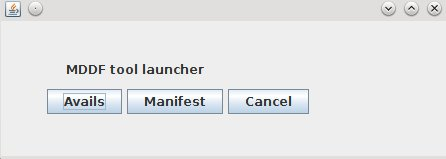

User's Guide: Tool Suite Release 1.7
Contents:
- Overview
- Usage
- Installing & Launching
- Interactive Mode
- CLI Mode
- Scripted Mode
- Writing Command Scripts
- Examples
1) Overview
To facilitate industry-wide adoption and usage of the MovieLabs Digital Distribution Framework,
MovieLabs has made available to the industry a suite of free and open-source software that
provides several key services:
- Validation: check the validity of a Avails,Media Manifest, Media Manifest
Core, Common Metadata, or Media Entertainment Core (MEC) file.
- Conversion: converts a Avails file from one format to another
The MDDF Tools are executable packages that are downloadable and provide interactive
environments for accessing the various MDDF services. The tools are available as an executable
Java jar. This provides access to all implemented MDDF services. The latest version of the
mddf-tool jar is available on the MovieLabs mddf GitHub repository.
2) Usage
The tool suite provides three modes of operation:
- Interactive: provides a GUI to check the validity of one or more MDDF files,
correct errors, and/or convert files to other formats.
- CLI: run from the Command Line Interface (CLI) using arguments
- Scripted: execution is controlled by a script file. The scripted mode
may be used either from a terminal window via command line interface (CLI) or in
conjunction with scheduled jobs (e.g., via crontab).
3) Installing & Launching
The tools are available as an executable Java jar. The latest version of the mddf-tool jar is
available on the MovieLabs mddf
GitHub repository. The mddf-tool jar may be used on any machine that supports Java 1.8 or a
more recent jvm. Once the jar file has been downloaded, it may be run using the standard Java
command:
java -jar ./{path-to-directory}/mddf-tool-v{version}.jar {args}
3.1) Interactive Mode
To access the tool suite via the interactive GUI, the jar should be run using the
-i
argument:
java -jar ./{path-to-directory}/mddf-tool-v{version}.jar -i
which will result in the Launcher Panel being displayed:

On start-up the software will periodically check to see if newer releases are available. If
so, a notice will be displayed providing information on how to obtain the latest release.
Checking for updates takes place at periodic intervals (i.e., approximately twice per month).
The Tool Launcher may be used to select either the Avails Validator/Translator tool or the
Manifest Validator tool. [Note: the Manifest Validator is also used to process MMC and MEC
files] For detailed instructions on using a specific tool, consult the appropriate tool-specific
documentation:
3.2) CLI Mode
The CLI mode may be used to validate one or more MDDF file. Command line options are, therefore,
focused mainly on specifying which MDDF file(s) to process and controlling logging output. The
following arguments are available:
-d,--dir <arg> Process all MDDF files in a directory.
-f,--file <arg> Process a single MDDF file.
-h,--help Display this HELP file, then exit
-i,--interactive Launch in interactive mode with full UI. When
used, this argument will result in all other
arguments being ignored.
-l,--logFile <arg> Output file for logging.
-logLevel <arg> Filter for logging; valid values are:
'verbose'
'warn' (DEFAULT)
'error'
'info'
-r,--recursive <arg> [T/F] processing of a directory will be
recursive (Default is 'T').
-s,--script <arg> Run a script file.
-v,--verbose Display log-file entries in terminal window
during execution.
-V,--version Display software version and build date.
-X,--exportAll export valid files in all applicable formats.
-x <arg> export valid files in specified format(s).
Multiple formats may be specified separated by
commas and requests to export in a format
matching the source format are ignored. The
formats available are dependent on the type of
MDDF file.
For AVAILS the following formats may be
specified:
-- AVAILS_1_7: Excel using v1.7 template.
-- AVAILS_1_7_2: Excel using v1.7.2 template.
-- AVAILS_2_2: XML using v2.2 schema.
-xDir,--exportDir <arg> Directory for exported files (Default is '.')
Example Usage:
java -jar mddf-tool.jar -f ../sample/MyManifest.xml -v
Validates a single file, prints the log entries to the console, and does not save the log output
in a CVS file. Log filtering is not specified so the default level of WARNING or higher is used.
java -jar mddf-tool.jar -d ../sample logLevel error -l myLogFile
Validates all MDDF files in a directory and filters the log entries to only include those with
severity ERROR or higher. processing will include all subdirectories since the '-r' argument is
not specified and defaults to 'T'. When completed, the log output will be saved to
"./myLogFile.csv".
java -jar mddf-tool-f ./Avail_v1.7.xlsx -xDir ./out -x AVAILS_2_2
Validates a single Avails specified as an Excel spreadsheet using the v1.7 template. If the file
is valid it will be converted to an XML file using the v2.2 schema and then saved in the './out'
subdirectory.
3.3) Scripted Mode
Validation of multiple MDDF files may be performed using scripts that can specify any of
options and settings available thru the CLI. A script may easily be used to process a set of
files with specified sub-sets being handled using different options.
3.3.1) Writing Command Scripts
A script file is written using the JSON
syntax. The structure for a validation script is as follows:
3.3.2) Examples
The following is an example of script that validates two Manifest files plus any Manifests
found in a specific folder and then saves the message log in an output file:
{
"validate":{
"pathPrefix":"./MediaManifests/",
"checks":{
"contraints":"Y",
"bestPrac":"N"
},
"logging":{
"level":"Warning",
"output":"./scriptLog01.xml"
},
"manifests":[
{
"file":"si_tests/CMM_BBB_v0.1.xml",
"profile":"DemVal"
},
{
"file":"si_tests/CMM_Sita_v0.1.xml",
"profile":"none"
},
{
"file":"studio",
"profile":"IP-1"
}
]
}
}
The next two examples illustrate the use, or non-use, of the
pathPrefix
. In the first example, all relative paths are resolved using the present working directory as
the base. Both
foo1.xml
and
foo2.xml
should therefore be in the
pwd
.
{
"validate":{
"pathPrefix":"./Demos/",
"manifests":[
{
"file":"foo1.xml"
},
{
"file":"./foo2.xml"
},
{
"file":"/foo3.xml"
}
]
}
}
In the next example,
foo1.xml
and
foo2.xml
are still co-located but are now in in a sub-directory of the directory containing the script
file.
foo3.xml
should still be in the same location as the previous examples since it is specified using an
absolute path.
{
"validate":{
"manifests":[
{
"file":"foo1.xml"
},
{
"file":"./foo2.xml"
},
{
"file":"/foo3.xml"
}
]
}
}
|